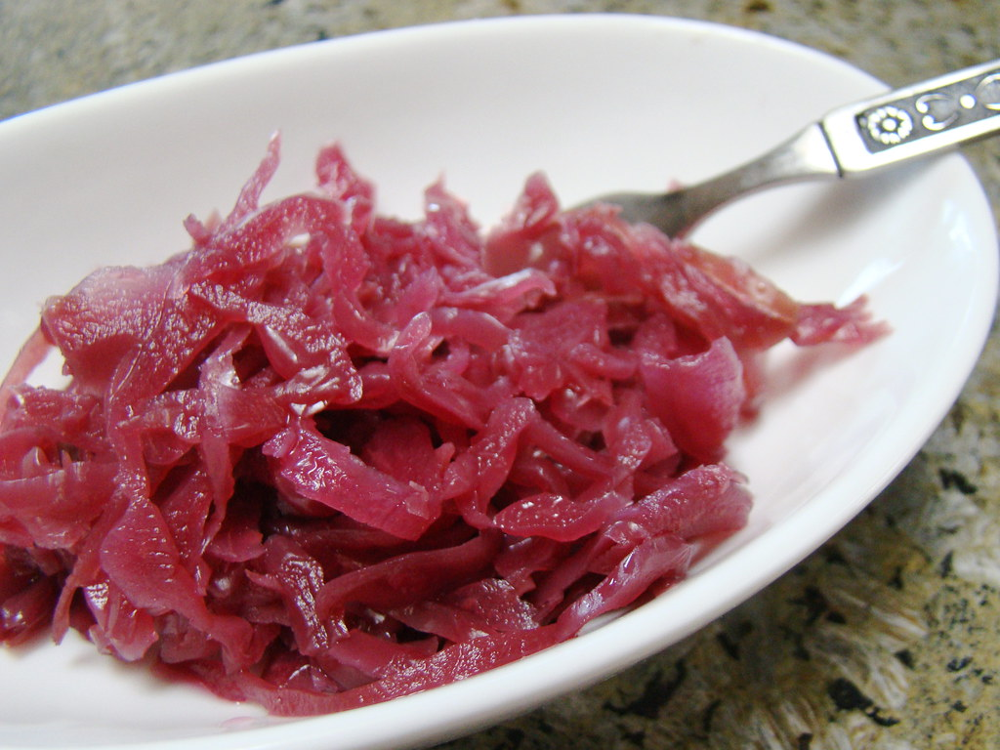

Main
Amerikaner |
Roast with Mustard Sauce |
Spaghetti Carbonara |
Waffels
Red Cabbage a la Oma

Description:
This is a recipe for sweet and sour red cabbage the way my Oma used to make it. It is a popular vegetable side in German
cuisine and goes really nicely with potatos or potato dumplings and a nice roast or Bratwurst.
Ingredients:
-
1-2 TBS butter
-
1-2 heads of red cabbage
-
1-2 apples
-
1 cup of vinegar
-
1-2 cups of sugar
Steps:
-
Shred red cabbage and apples.
-
Melt butter in a pan.
-
Add red cabbage and apples to the butter.
-
Pour a heap of sugar (approximately 1 cup) on top of red cabbage.
-
Add 1 cup of vinegar and approx. 1 cup of water.
-
Cover and let simmer for approximately 1 - 1 1/2 hours.
-
Stir frequently and check the fluid. If the juice gets a bit low, carefully add more water,
but be careful with the water because juices develop as it cooks. Add more sugar to taste. The Cabbage should have a
sweet and sour taste.
The cabbage is done when it is nice and soft. Serve with potatos, mashed potatos or potato dumplings and a roast or Bratwurst